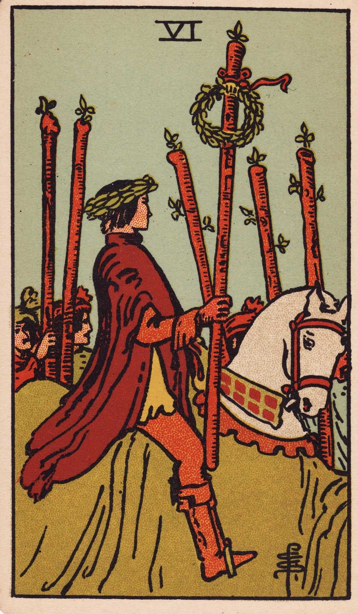

Instability, unsteadiness, silence, lesser degrees of deception and error.
The Sun
Material happiness, fortunate marriage, contentment.
The same in a lesser sense.
Judgment
Change of position, renewal, outcome.
Weakness, cowardice, simplicity, also deliberation, decision, sentence.
The World
Assured success, route, voyage, emigration, flight, change of place.
Inertia, fixedness, stagnation, permanence.
Ace of Wands
Creation, invention, enterprise, the powers which result in these, principle, beginning, source, birth, family, origin, the beginning of enterprises, money, fortune, inheritance.
Fall, decadence, ruin, damnation, to perish, clouded joy.
Two of Wands
On one hand, riches, fortune, magnificence. And on the other, physical suffering, disease, chagrin, sadness, mortification. Malady, mortification, the sadness of Alexander amidst the grandeur of this world’s wealth.
Established strength, enterprise, effort, trade, discovery, commerce.
The end of troubles, suspension or end of adversity, disappointment, and toil.
Four of Wands
Country life, repose, concord, harmony, prosperity, peace, and the perfected work of these.
The meaning remains unaltered: Increase, felicity, beauty, embellishment.
Five of Wands
Imitation, the strenuous competition and struggle of the search for riches and fortune. Hence some attributions say that it is a card of gold, gain, opulence.
Trickery, contradiction, litigation, disputes.

Six of Wands
A victor triumphing, but also great news, such as might be carried in state by the King’s courier. Expectation crowned with its own desire, the crown of hope.
Apprehension, fear, as of a victorious enemy at the gate, treachery, disloyalty, as of gates being opened to the enemy.
Seven of Wands
Valor, discussion, wordy strife, negotiations, war of trade, barter, competition, success.
Perplexity, embarrassments, anxiety.
Eight of Wands
Activity in undertakings, the path of such activity, swiftness, as that of an express messenger; great haste, great hope, speed towards an end which promises assured felicity; that which is on the move, also the arrows of love.
Arrows of jealousy, internal dispute, stingings of conscience, quarrels.
Nine of Wands
Strength in opposition, meeting the onslaught boldly. Also delay, suspension, adjournment.
Obstacles, adversity, calamity.
Ten of Wands
Honor and good faith. Oppression, but also fortune, gain, any kind of success of these things. Also false-seeming, disguise, betrayal. Success is impaired if the Nine of Swords follows, and if it is a question of a lawsuit—there will be certain loss.
Contrarieties, difficulties, intrigues, and their analogies.
Page of Wands
Faithful, a lover, an envoy, a postman, bearing favorable testimony. A dangerous rival, if followed by the Page of Cups. Has the chief qualities of his suit.
Anecdotes, announcements, evil news. Also indecision and the instability which usually accompanies it.
Knight of Wands
Departure, absence, flight, emigration. Change of residence.
Rupture, division, interruption, discord.
Queen of Wands
Friendly, chaste, loving, honorable. Also, love of money.
Good, economical, obliging, serviceable. Also signifies opposition, jealousy, deceit, and infidelity.
Memories and the past. Reflecting on childhood, happiness, enjoyment, but things that have vanished. Alternatively, new relations, new knowledge, new environment.
The future, renewal, that which will come to pass presently.
Seven of Cups
Unexpected opportunity, reflection, imagination, sentiment, things seen in the glass of contemplation, some attainment in these degrees but nothing permanent or substantial.
Desire, will, determination, project.
Eight of Cups
The card speaks for itself on the surface, but other readings are entirely antithetical—giving joy, mildness, timidity, honor, modesty.
Great joy, happiness, feasting.
Nine of Cups
Concord, contentment, physical wellbeing. Also victory, success, advantage, satisfaction for the Querent or person for whom the consultation is made.
Truth, loyalty, and liberty.
Ten of Cups
Contentment, repose of the entire heart—the perfection of that state. Alternatively, the place inhabited by the Querent, or a person who is taking charge of the Querent’s interests.
Repose of the false heart, indignation, violence.
Page of Cups
News, message, application, reflection, meditation—also these things directed to business.
Someone not to be trusted, perversion, vice, dishonor, depravity.
King of Cups
Business, law, divinity, responsibility, obligation to the Querent. Also equity, art, and science, including those who profess, and creative intelligence.
The evil side of wealth, bad intelligence. Also great riches.
Two of Pentacles
Happiness and recreation. Also news and messages in writing, such as obstacles, agitation, trouble, embroilment.
Enforced happiness, simulated enjoyment, handwriting, composition, letters of exchange.
Three of Pentacles
Profession, trade, skilled labor. Also nobility, aristocracy, renown, glory.
Mediocrity in work and otherwise, childishness, pettiness, weakness.
Four of Pentacles
The surety of possessions, cleaving to that which one has, gifts, legacy, inheritance.
Suspense, delay, opposition.
Five of Pentacles
Material trouble above all, destitution or otherwise. Alternatively, love and lovers—wife, husband, friend, mistress—also concordance, affinities. These alternatives can not be harmonized.
Disorder, chaos, ruin, discord, waste.
Six of Pentacles
Presents, gifts, gratification. Also attention, vigilance, opportunity, present prosperity.
Desire, greed, envy, jealousy, illusion.
Seven of Pentacles
Money, business, barter, altercation, quarrel. Also innocence, ingenuity, cleansing.
Anxiety about money.
Eight of Pentacles
Work, employment, commission, craftsmanship, skill in craft and business.
Valor, realizing intelligence, business and normal intellectual aptitude, sometimes mathematical gifts and attainments of this kind—success in these paths.